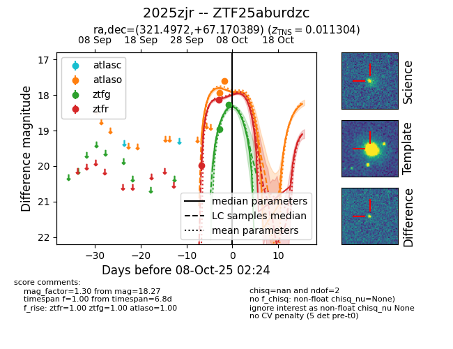
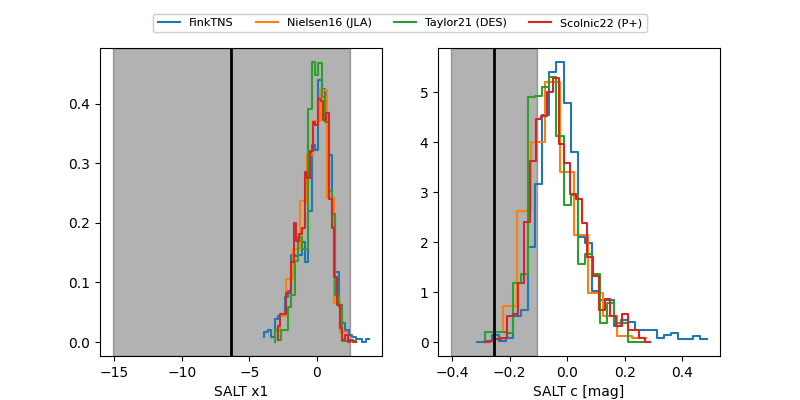

FINK: ZTF25aburdzc
Lasair: ZTF25aburdzc
ALeRCE: ZTF25aburdzc
TNS: 2025zjr
YSE: 2025zjr
ZTF25aburdzc (ztf,fink)
2025zjr (tns,yse)
equatorial (ra, dec) = (321.4972,+67.17039)
galactic (l, b) = (104.8957,+11.80931)


last atlaso=17.60, ztfg=18.27, ztfr=18.14
2 atlaso, 2 ztfg, 2 ztfr detections